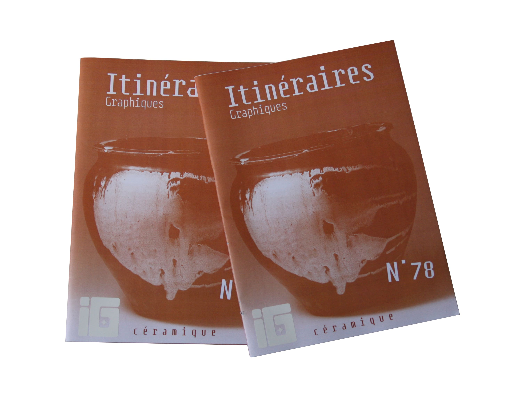
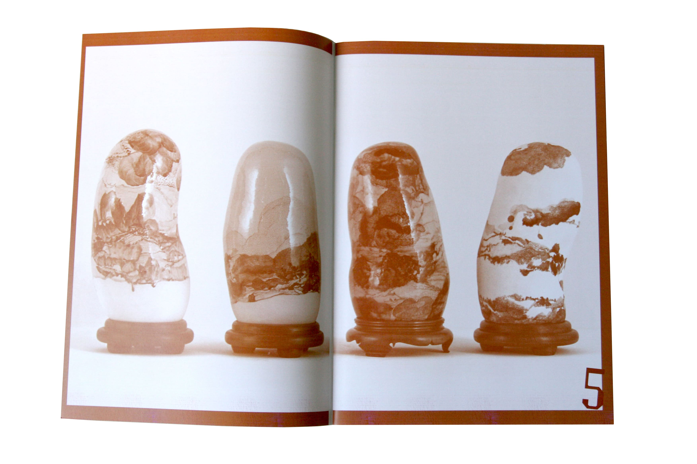

Revue Graphique
Ce projet consistait à créer ma propre revue, intitulée « Itinéraires Graphiques ».
J’ai choisi la céramique comme thème, un sujet qui me passionne, d’autant plus que c’est un médium que j’aime pratiquer.
Le magazine est entièrement monochrome ; j’ai choisi la couleur terracota en référence à la céramique.


